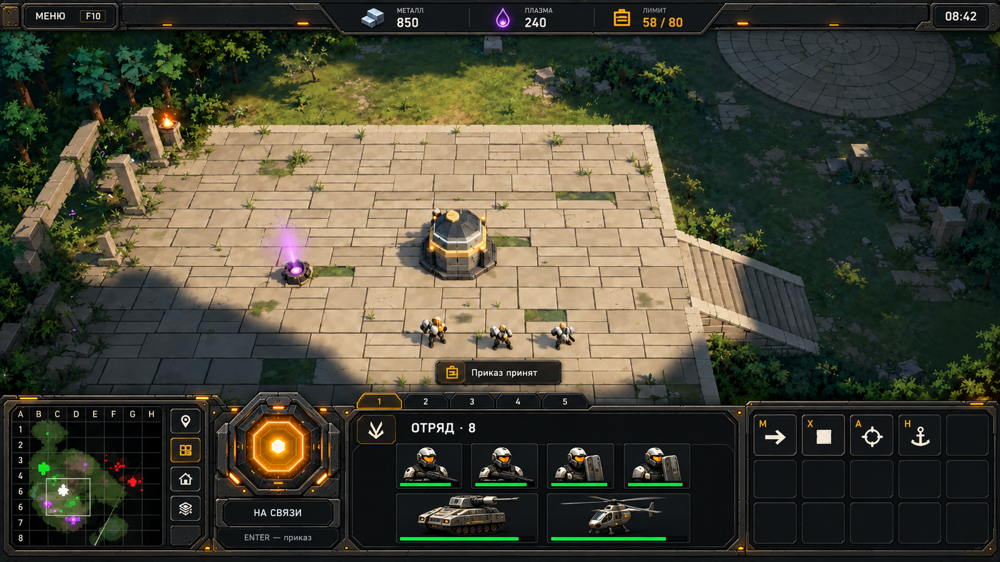
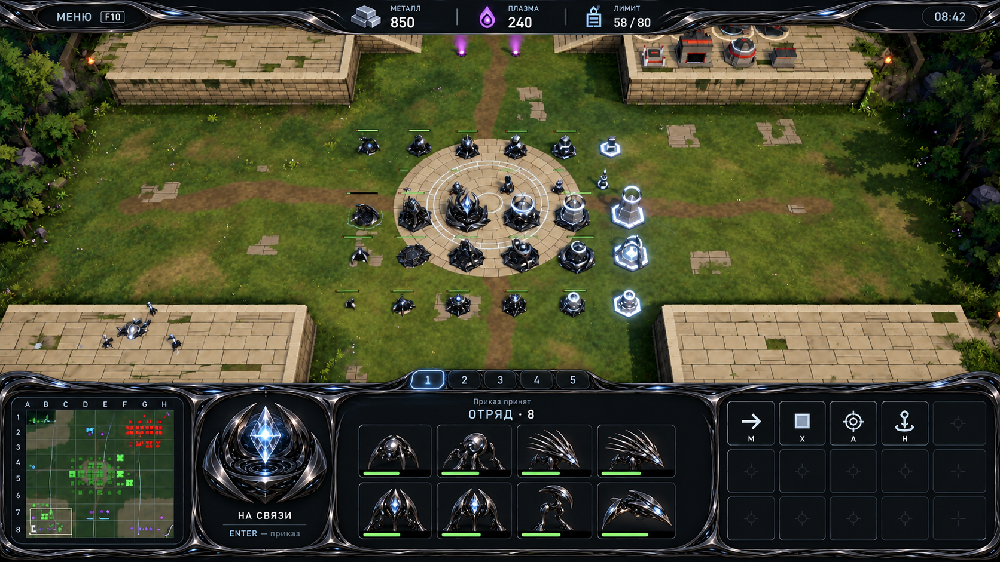
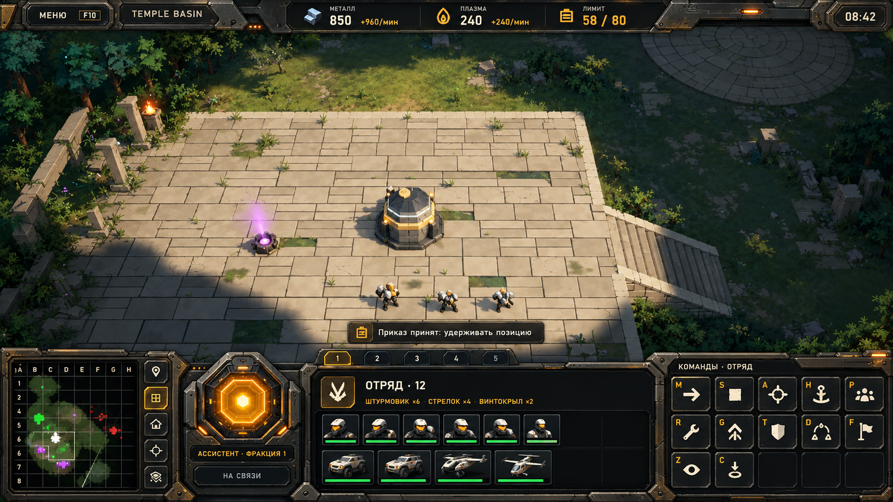
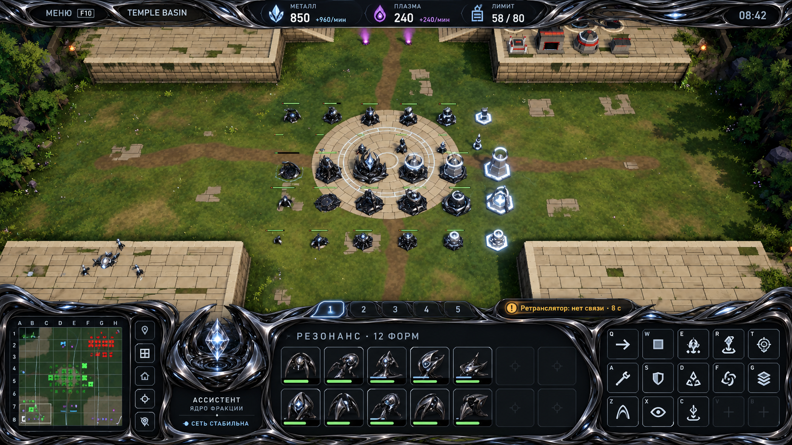
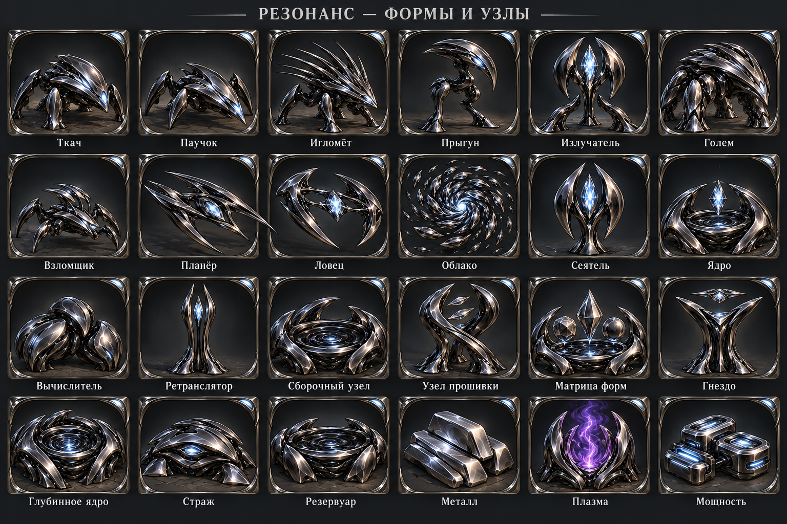
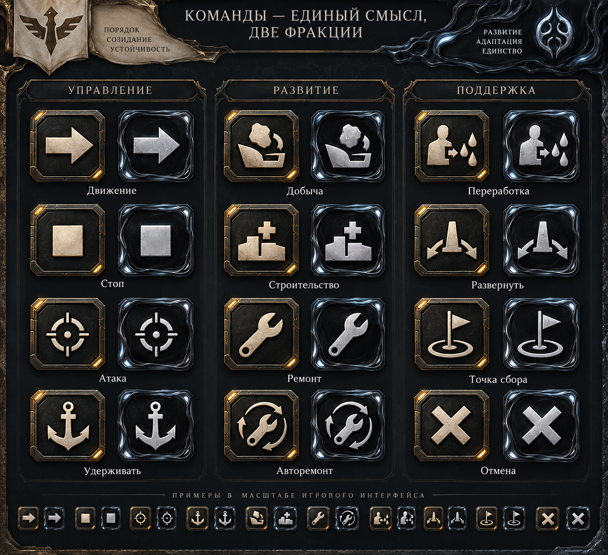
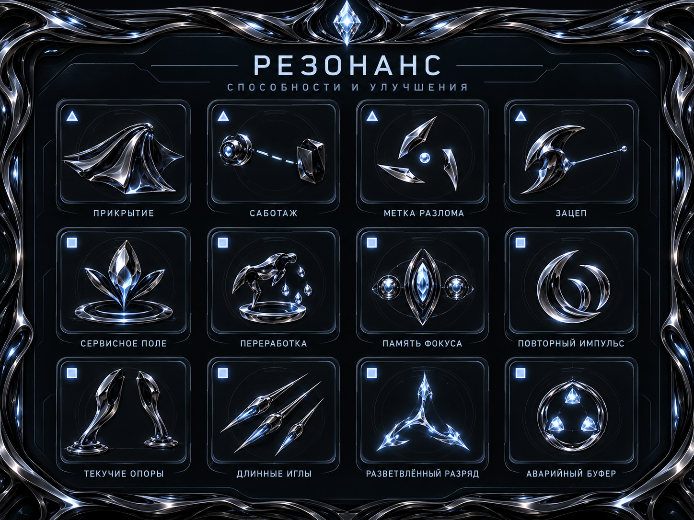
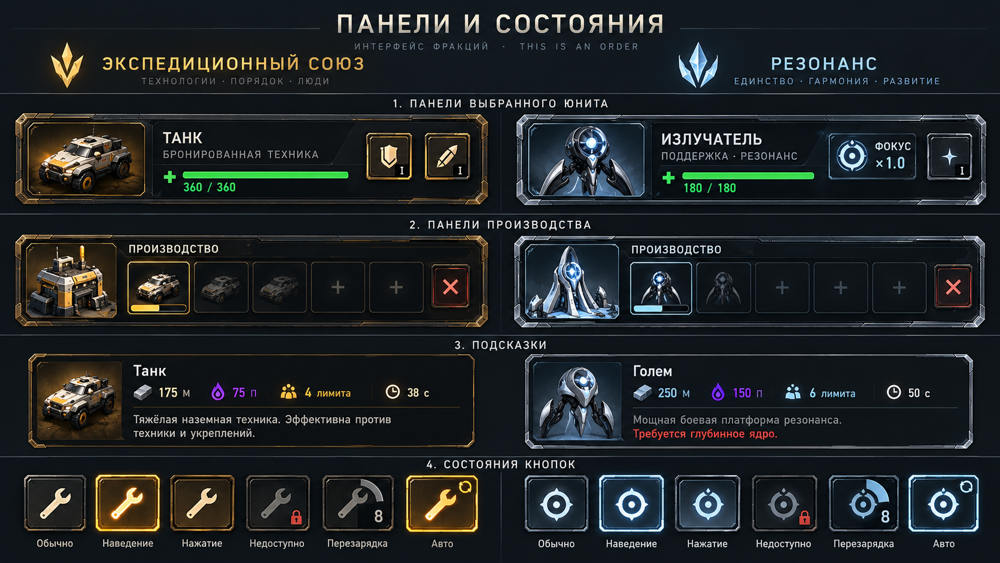
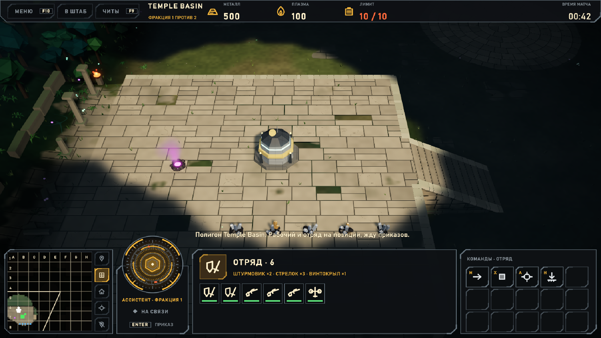
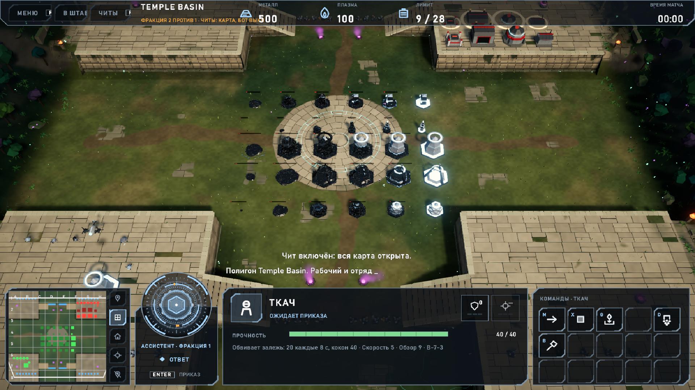

UI двух рас — концептыUI двух рас · концепты v0.1
11 изображений по существующей структуре HUD. Начать просмотр предлагаю с облегчённых вариантов 10/11. Игровой интерфейс не изменён. Это художественные концепты: числа, масштаб, подписи и некоторые портреты требуют исправления перед реализацией.

10. Люди — облегчённый HUD
Открыть оригинал ↗

11. Наниты — облегчённый HUD
Открыть оригинал ↗

01. Люди — выразительный HUD
Открыть оригинал ↗

02. Наниты — выразительный HUD
Открыть оригинал ↗

03. Иконки людей: юниты и здания
Открыть оригинал ↗

04. Иконки нанитов: формы и узлы
Открыть оригинал ↗

05. Общие команды в двух стилях
Открыть оригинал ↗

06. Люди: способности и улучшения
Открыть оригинал ↗

07. Наниты: способности и улучшения
Открыть оригинал ↗

08. Панели, подсказки и состояния
Открыть оригинал ↗

09. Ассистент, ввод и обратная связь
Открыть оригинал ↗Исходные снимки из Unity

Люди — текущий HUD
Открыть оригинал ↗
Наниты — исходный кадр визуального полигона
Открыть оригинал ↗